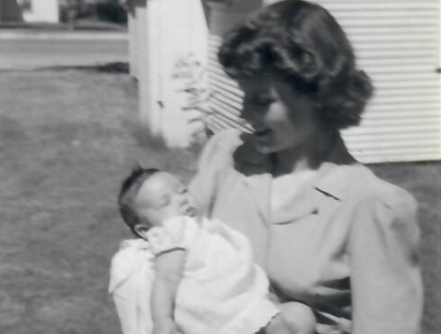
Berkeley
1946–1949
Born in Berkeley and spent my earliest childhood there before our family moved to Sacramento.
The places I have lived tell the story of my life. Each location represents a chapter in my personal, professional, and intellectual journey.

Born in Berkeley and spent my earliest childhood there before our family moved to Sacramento.
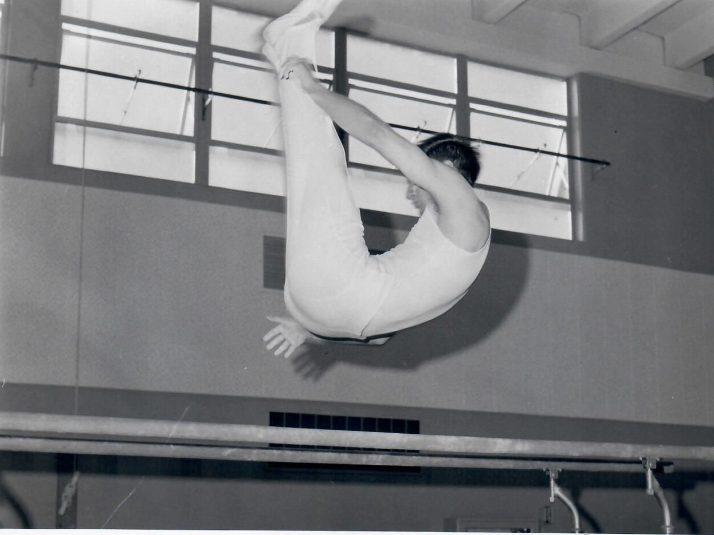
Grew up, graduated from high school, and developed my passion for science and engineering.
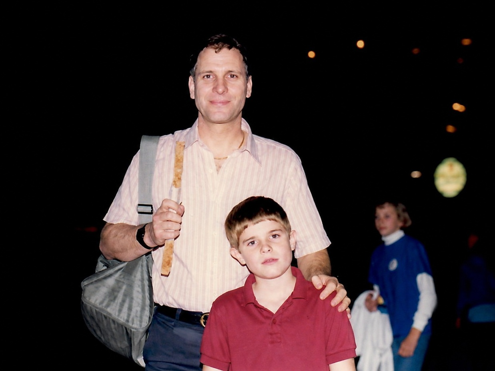
Earned engineering degrees, began my academic career, married, and started raising a family.
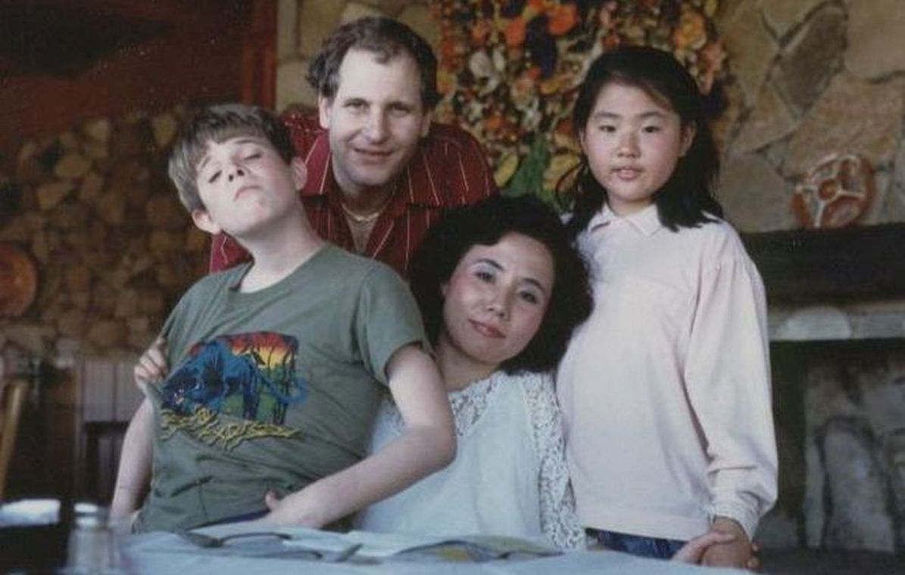
Divorce, new professional direction and life on California's beautiful central coast.
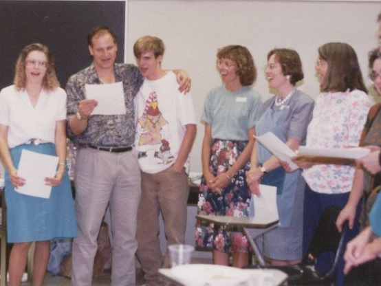
Second Marriage, completion of twenty-six years as a professor while raising a blended family and helping build a leading engineering department.
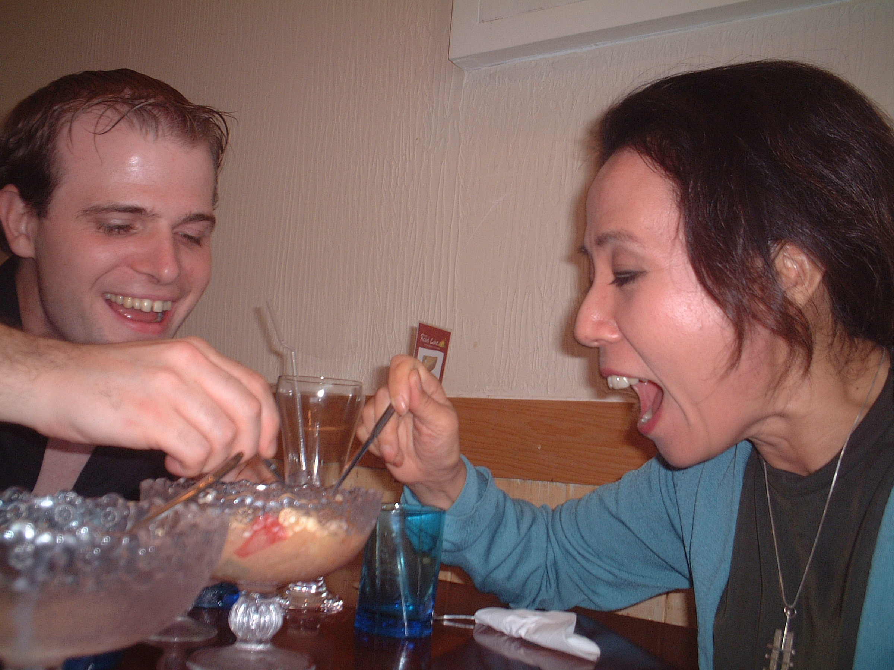
A year that broadened my perspective through international teaching and culture.
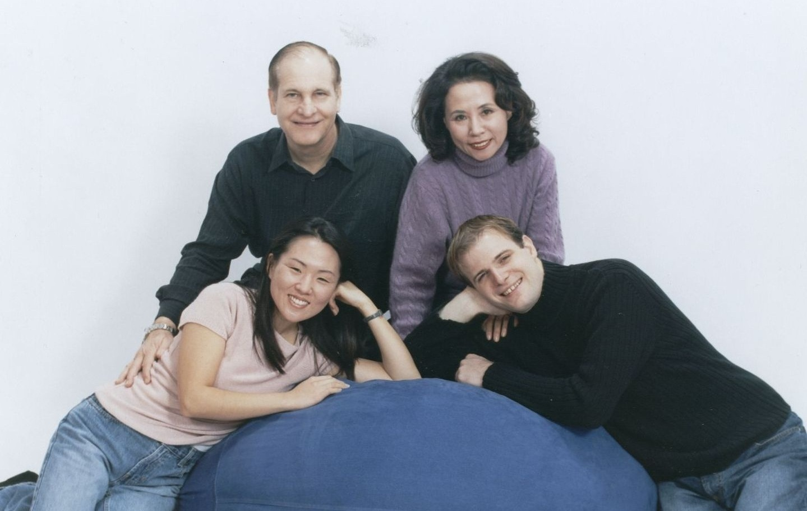
As Department Head at Oklahoma State University I was able to dramatically expand research facilities and teaching and research faculty and after my second retirement I focused on teaching in prisons and assisting people transitioning from prison back into society.
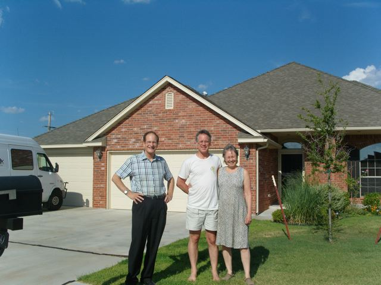
Continued helping people returning from prison, started Adjunct teaching focusing on disadvantaged students, and started lectures on Process Theology.
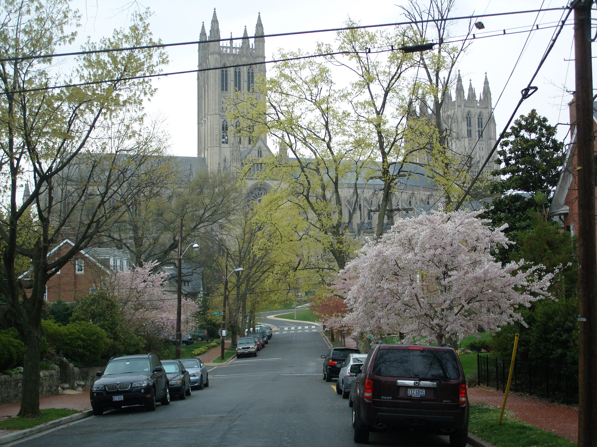
An Adjunct Professor position at The Catholic University of America allowed continued teaching aimed at disadvantaged students while living near the nation's capital and enjoying its history, museums, and culture.

An Adjunct Professor position at Towson University allowed the continued teaching of disadvantaged students and life in a newly constructed house followed by a house built in 1790!
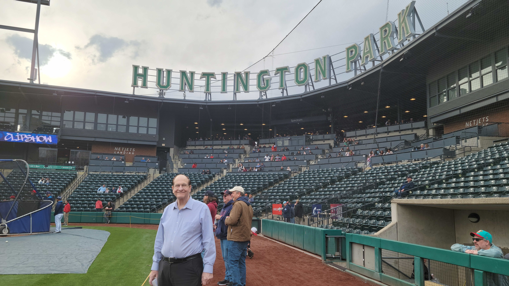
Final retirement and following my wife to her new job in Ohio resulted in a wonderful opportunity to enjoy life and develop lectures in Process Theology and Quantum Physics.
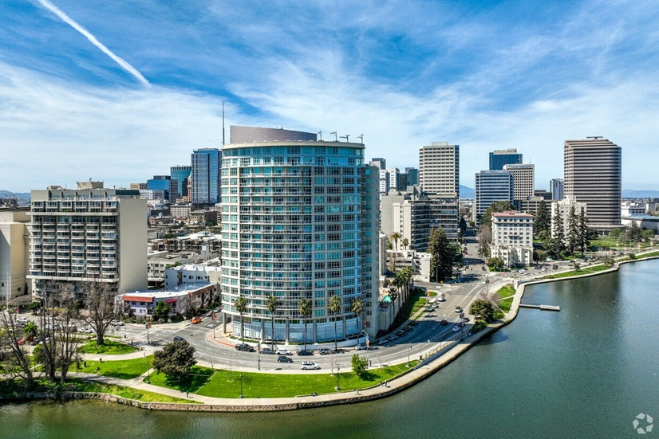
A planned return to Northern California to be closer to my children and grandchildren.